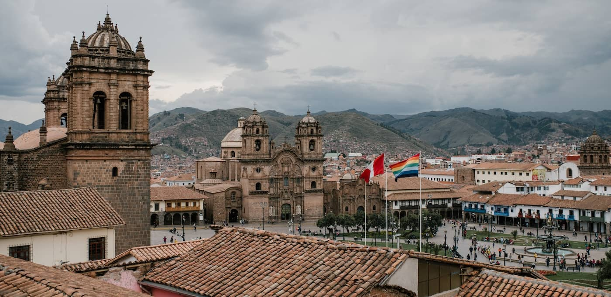
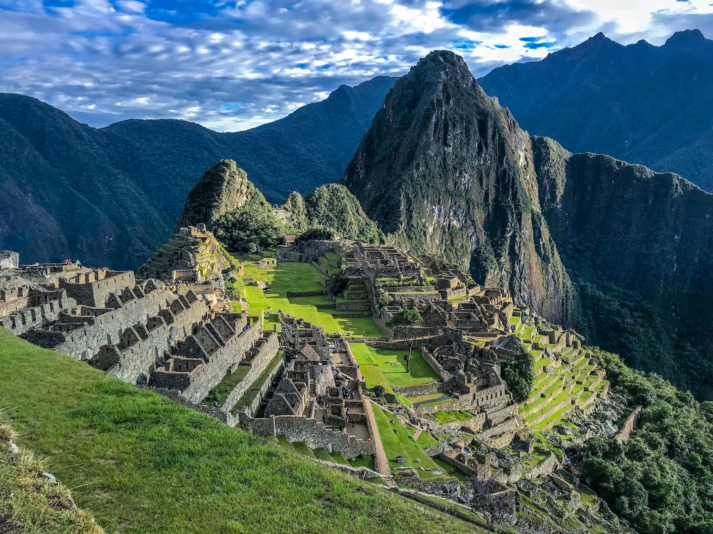
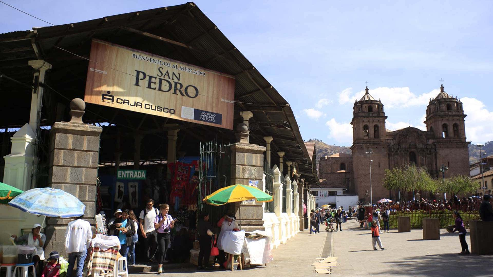

Lugares de atraccion
Hay muchos lugares para visitar y conocer en Cusco. La ciudad ofrece sitios históricos y una emergente
escena gastronómica aclamada internacionalmente.
Numerosas atracciones están ubicadas cerca del
hotel, Lo que sea que escojas para hacer en tus días, la aventura comienza aquí.
¿Que quieres Hacer Hoy?
Cusco
Machu Picchu
Mercado San Pedro
quillarumiyoc